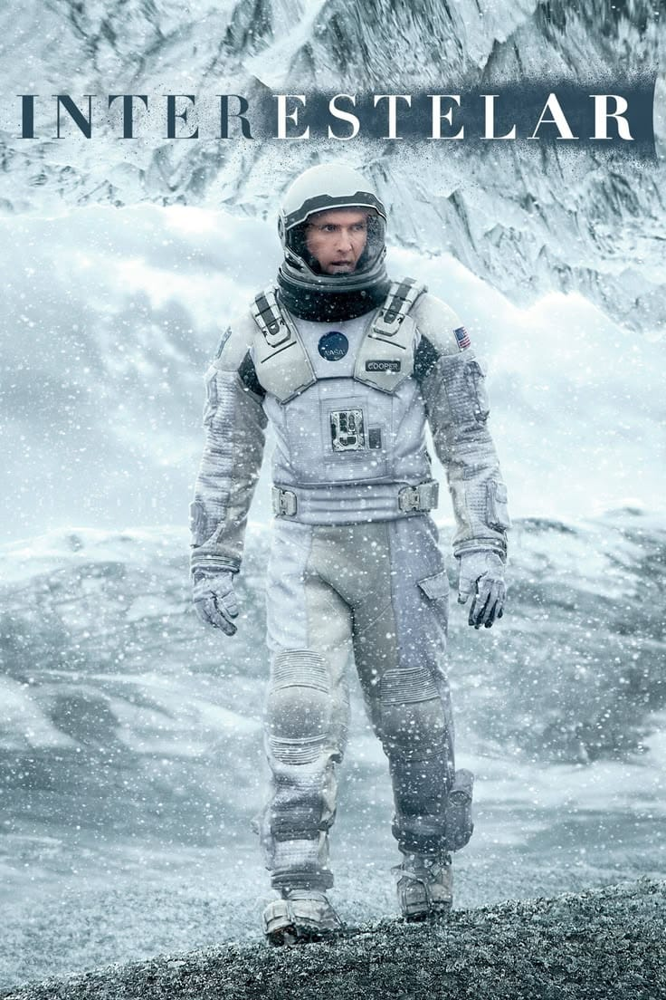
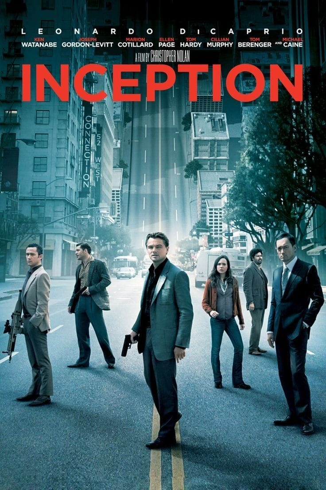
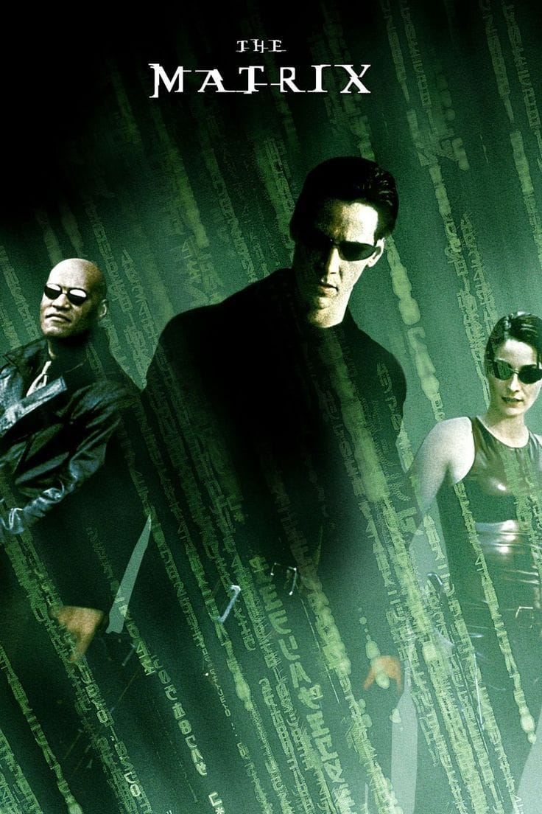

Entre em universos fascinantes, tecnologias surpreendentes, viagens pelo espaço, futuros distantes e
mistérios que desafiam a realidade. Aqui você encontra filmes para quem gosta de explorar o desconhecido,
descobrir novas possibilidades e mergulhar em histórias repletas de ciência, aventura e grandes
reviravoltas. Escolha o que assistir e prepare-se para uma experiência que vai levar sua imaginação para
além dos limites.
Interestelar

Em um futuro em que a Terra enfrenta uma grave crise ambiental, um grupo de astronautas parte em uma
missão através de um buraco de minhoca para encontrar um novo planeta habitável para a humanidade.
Enquanto enfrenta os mistérios do espaço e os efeitos da relatividade, Cooper precisa lidar com a
distância e com o tempo que o separa de sua família.
Gênero: Ficção científica, drama e aventura | Ano: 2014 | Duração: 2h 49min |
| Classificação indicativa: 10 anos
A Origem

Dom Cobb é um especialista em invadir os sonhos das pessoas para roubar informações. Ele recebe uma
missão quase impossível: implantar uma ideia na mente de um empresário enquanto enfrenta diferentes
níveis de sonhos e seus próprios traumas.
Gênero: Ficção científica, ação e suspense | Ano: 2010 | Duração: 2h 28min | Classificação indicativa: 14 anos
Matrix

Neo descobre que a realidade em que vive é uma enorme simulação criada por máquinas. Ao conhecer Morpheus
e Trinity, ele passa a lutar contra o sistema e descobre que pode ser a chave para libertar a
humanidade.
Gênero: Ficção científica, ação e aventura | Ano: 1999 | Duração: 2h 16min | Classificação indicativa: 14 anos